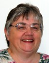
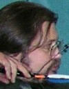
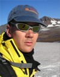

|
Partners
Principal InvestigatorsAnupma Prakash is an Associate Professor at the Geophysical Institute, University of Alaska Fairbanks (UAF). Her research focus is on remote sensing - GIS based mapping of land surface composition and change. She teaches post-secondary courses in remote sensing and GIS at the Department of Geology and Geophysics, UAF. She has received research funding from NASA, NSF, BLM, MMS and State industries. Dr. Prakash is involved in conducting teacher training, K12 and post-secondary curriculum development, and making science data and research results accessible to all audiences.  Advisory Board MembersNeal Brown is a rocket scientist and an expert on auroral studies. He was the Manager of Poker Flat Research Range (PFRR), the only University-based rocket launch facility in the U.S. He is presently the Director of the Alaska Space Grant Program. Promoting education and research in the broad areas of Science, Technology, Engineering and Mathematics to all audiences: from kindergarten through post-secondary, and to to the general science attentive audience is his passion.
Cheryl Cooper was an elementary school teacher for the rural Delta/Greely School District in Alaska for over 20 years. She has been teaching k-12 teachers since 1988. Cheryl has taken numerous professional education trainings, is active in several professional teachers organizations, and is deeply involved with inquiry-based curriculum development, testing and implementation in rural Alaskan schools.
Dan Solie received his Ph.D. in Physics from Virginia Tech. in 1991. He is the Director and UAF PI for the Alaska Native Science and
Engineering Program (ANSEP), and is involved with several other education programs, such as LSAMP Pacific Alliance and HAARP, that are focused on native and minority students. He is also the founding board member of WISE, and a member of Alaska Department of Education working group on developing “Alaska Science
Performance Standards.Education EvaluatorCheryl Cooper serves as an education evaluator for the AMIDST project. She brings a dual perspective to the project: (1) of an experienced classroom teacher who has taught science curricula in elementary schools in Alaska's rural settings, and (2) an evaluator who has in the recent past been involved with development of Alaska's k12 science standards and in evaluating science curricula and teacher student performance for projects funded primarily by Alaska's Department of Education.Web/Media Specialists
Steve McClung is a geosciences education/outreach media specialist. Steve is a graduate of the Geosciences Department at Oregon State University, where his research focused on the use of remote sensing and GIS for the delineation of lahar (volcanic debris flow) hazard zones for Mount Shasta, California. Steve specializes in scientific visualization, graphic design, and creating dynamic HTML pages. He generated the graphic work that went into the headers for the AMIDST web pages.Rudi Gens is a Remote Sensing Scientist at the Alaska Satellite Facility at UAF and specializes in the processing and applications of Synthetic Aperture Radar (SAR) and Interferometric SAR data. For the AMIDST project, besides serving as the content expert in the applications of remote senisng data for studying past and current landscapes in Alaska, Dr. Gens created and implemented the website content in an XHTML and 508 compliant stlye, making the AMIDST website usable for a wide audience. |